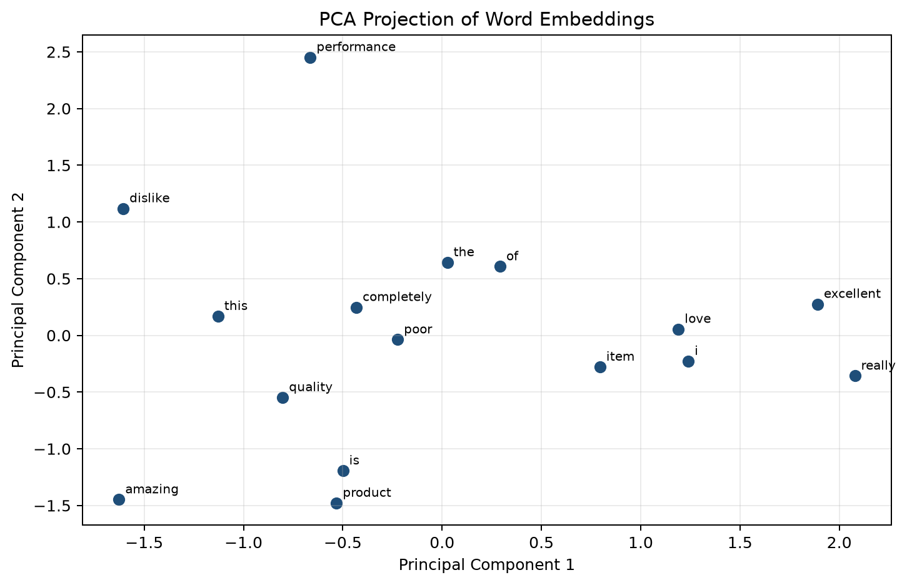

This report transforms five customer reviews into numerical representations. It shows the complete path from cleaned text to token IDs, padded sequences, four-dimensional word embeddings, flattened sentence vectors, and a two-dimensional PCA visualization.
The text is converted to lowercase and punctuation is removed. The resulting word tokens are kept in their original sentence order. Padding uses token ID 0, which is reserved for the padding symbol.
The vocabulary is created by assigning IDs in first-appearance order. Token ID 0 is reserved for padding.
| Word | Token ID | Word | Token ID |
|---|---|---|---|
| the | 1 | product | 2 |
| quality | 3 | is | 4 |
| excellent | 5 | i | 6 |
| really | 7 | love | 8 |
| this | 9 | of | 10 |
| item | 11 | amazing | 12 |
| performance | 13 | poor | 14 |
| dislike | 15 | completely | 16 |
All sequences are padded to the maximum sentence length of 7 tokens.
| Sample | Token sequence | Padded sequence |
|---|---|---|
| 1 | [1, 2, 3, 4, 5] | [1, 2, 3, 4, 5, 0, 0] |
| 2 | [6, 7, 8, 9, 2] | [6, 7, 8, 9, 2, 0, 0] |
| 3 | [1, 3, 10, 9, 11, 4, 12] | [1, 3, 10, 9, 11, 4, 12] |
| 4 | [1, 2, 13, 4, 14] | [1, 2, 13, 4, 14, 0, 0] |
| 5 | [6, 15, 9, 2, 16] | [6, 15, 9, 2, 16, 0, 0] |
For demonstration, each non-padding token is mapped to a reproducible four-dimensional dense vector generated with a fixed random seed. These vectors illustrate the representation format; they are not pretrained semantic embeddings. Padding is represented by [0.000, 0.000, 0.000, 0.000].
Sample 1: The product quality is excellent
[0.001, 0.299, -0.274, -0.891] [-0.455, -0.992, 0.060, 1.340] [-0.492, -0.620, 0.490, 0.357] [0.105, -0.930, -0.029, 0.695] [-1.344, -0.458, -1.901, -1.290] [0.000, 0.000, 0.000, 0.000] [0.000, 0.000, 0.000, 0.000]
Sample 2: I really love this product
[-1.842, -0.235, -1.267, 0.271] [0.157, -0.187, -2.517, -0.539] [-0.049, 0.113, -1.530, -0.478] [-0.979, -0.809, 1.061, -0.808] [-0.455, -0.992, 0.060, 1.340] [0.000, 0.000, 0.000, 0.000] [0.000, 0.000, 0.000, 0.000]
Sample 3: The quality of this item is amazing
[0.001, 0.299, -0.274, -0.891] [-0.492, -0.620, 0.490, 0.357] [-0.033, 0.884, -0.584, -0.112] [-0.979, -0.809, 1.061, -0.808] [0.110, 0.064, -1.225, 0.076] [0.105, -0.930, -0.029, 0.695] [1.359, -1.547, 0.859, 0.119]
Sample 4: The product performance is poor
[0.001, 0.299, -0.274, -0.891] [-0.455, -0.992, 0.060, 1.340] [-0.641, 2.000, 0.762, -1.199] [0.105, -0.930, -0.029, 0.695] [0.075, 0.577, -0.189, 0.683] [0.000, 0.000, 0.000, 0.000] [0.000, 0.000, 0.000, 0.000]
Sample 5: I dislike this product completely
[-1.842, -0.235, -1.267, 0.271] [-0.067, 0.667, 1.439, -0.676] [-0.979, -0.809, 1.061, -0.808] [-0.455, -0.992, 0.060, 1.340] [0.203, -0.463, 0.127, -1.187] [0.000, 0.000, 0.000, 0.000] [0.000, 0.000, 0.000, 0.000]
Each 7 × 4 embedding matrix is flattened row by row into a single vector of length 28.
Sample 1: [0.001, 0.299, -0.274, -0.891, -0.455, -0.992, 0.060, 1.340, -0.492, -0.620, 0.490, 0.357, 0.105, -0.930, -0.029, 0.695, -1.344, -0.458, -1.901, -1.290, 0.000, 0.000, 0.000, 0.000, 0.000, 0.000, 0.000, 0.000]
Sample 2: [-1.842, -0.235, -1.267, 0.271, 0.157, -0.187, -2.517, -0.539, -0.049, 0.113, -1.530, -0.478, -0.979, -0.809, 1.061, -0.808, -0.455, -0.992, 0.060, 1.340, 0.000, 0.000, 0.000, 0.000, 0.000, 0.000, 0.000, 0.000]
Sample 3: [0.001, 0.299, -0.274, -0.891, -0.492, -0.620, 0.490, 0.357, -0.033, 0.884, -0.584, -0.112, -0.979, -0.809, 1.061, -0.808, 0.110, 0.064, -1.225, 0.076, 0.105, -0.930, -0.029, 0.695, 1.359, -1.547, 0.859, 0.119]
Sample 4: [0.001, 0.299, -0.274, -0.891, -0.455, -0.992, 0.060, 1.340, -0.641, 2.000, 0.762, -1.199, 0.105, -0.930, -0.029, 0.695, 0.075, 0.577, -0.189, 0.683, 0.000, 0.000, 0.000, 0.000, 0.000, 0.000, 0.000, 0.000]
Sample 5: [-1.842, -0.235, -1.267, 0.271, -0.067, 0.667, 1.439, -0.676, -0.979, -0.809, 1.061, -0.808, -0.455, -0.992, 0.060, 1.340, 0.203, -0.463, 0.127, -1.187, 0.000, 0.000, 0.000, 0.000, 0.000, 0.000, 0.000, 0.000]
PCA reduces the four-dimensional word vectors to two principal components. Words that appear near one another in the plot have similar coordinates under this illustrative embedding assignment. With a real pretrained embedding model, relative positions would be learned from language data and would carry stronger semantic meaning.

Tokenization converts the reviews into discrete IDs, while padding makes every sample compatible with a single rectangular tensor. The embedding layer changes each ID into a dense vector, preserving a fixed four-value representation per token. Flattening then produces a fixed-length sentence vector with 28 values. The PCA plot provides a compact visual summary of the embedding space, but the positions should be interpreted as illustrative because the vectors were generated randomly rather than trained on a large corpus.